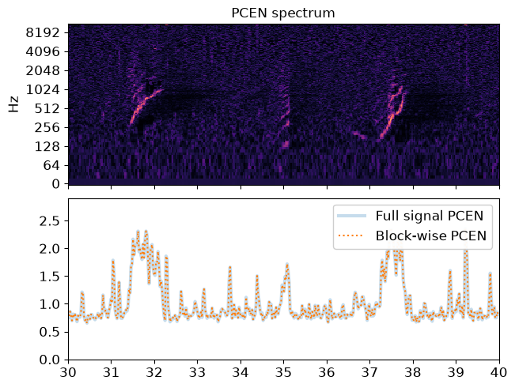

Note
Go to the end to download the full example code.
PCEN Streaming#
This notebook demonstrates how to use streaming IO with librosa.pcen
to do dynamic per-channel energy normalization on a spectrogram incrementally.
This is useful when processing long audio files that are too large to load all at once, or when streaming data from a recording device.
It also illustrates how to use a pre-allocated output buffer for block-wise short-time Fourier transforms. This provides a minor speed boost and reduction in memory usage when processing audio streams.
We’ll need numpy and matplotlib for this example
import numpy as np
import matplotlib.pyplot as plt
import soundfile as sf
import librosa
First, we’ll start with an audio file that we want to stream
filename = librosa.ex('humpback')
Next, we’ll set up the block reader to work on short segments of audio at a time.
# We'll generate 64 frames at a time, each frame having 2048 samples
# and 75% overlap.
#
n_fft = 2048
hop_length = 512
# fill_value pads out the last frame with zeros so that we have a
# full frame at the end of the signal, even if the signal doesn't
# divide evenly into full frames.
sr = librosa.get_samplerate(filename)
stream = librosa.stream(filename, block_length=16,
frame_length=n_fft,
hop_length=hop_length,
mono=True,
sr=sr,
fill_value=0)
For this example, we’ll compute PCEN on each block, find the maximum response over frequency, and store the results in a list.
# Make an array to store the frequency-averaged PCEN values
pcen_blocks = []
# Initialize the PCEN filter delays to steady state
zi = None
# Create a handle for storing the block STFT outputs
# After the first block has been processed, we can reuse
# this buffer instead of allocating a new one for each block.
D = None
for y_block in stream:
# Compute the STFT (without padding, so center=False)
D = librosa.stft(y_block, n_fft=n_fft, hop_length=hop_length,
center=False, out=D)
# Compute PCEN on the magnitude spectrum, using initial delays
# returned from our previous call (if any)
# store the final delays for use as zi in the next iteration
P, zi = librosa.pcen(np.abs(D), sr=sr, hop_length=hop_length,
zi=zi, return_zf=True)
# Compute the max PCEN over frequency, and append it to our list
pcen_blocks.extend(np.max(P, axis=0))
# Cast to a numpy array for use downstream
pcen_blocks = np.asarray(pcen_blocks)
For the sake of comparison, let’s see how it would look had we run PCEN on the entire spectrum without block-wise processing
y, sr = librosa.load(filename, sr=sr)
# Keep the same parameters as before
D = librosa.stft(y, n_fft=n_fft, hop_length=hop_length, center=False)
# Compute pcen on the magnitude spectrum.
# We don't need to worry about initial and final filter delays if
# we're doing everything in one go.
P = librosa.pcen(np.abs(D), sr=sr, hop_length=hop_length)
pcen_full = np.max(P, axis=0)
Plot the PCEN spectrum and the resulting magnitudes
# First, plot the spectrum
fig, ax = plt.subplots(nrows=2, sharex=True)
librosa.display.specshow(P, sr=sr, hop_length=hop_length,
x_axis='time', y_axis='log', ax=ax[0])
ax[0].set(title='PCEN spectrum')
ax[0].label_outer()
# Now we'll plot the pcen curves
times = librosa.times_like(pcen_full, sr=sr, hop_length=hop_length)
ax[1].plot(times, pcen_full, linewidth=3, alpha=0.25, label='Full signal PCEN')
times = librosa.times_like(pcen_blocks, sr=sr, hop_length=hop_length)
ax[1].plot(times, pcen_blocks, linestyle=':', label='Block-wise PCEN')
ax[1].legend()
# Zoom in to a short patch to see the fine details
ax[1].set(xlim=[30, 40]);

Total running time of the script: (0 minutes 1.770 seconds)